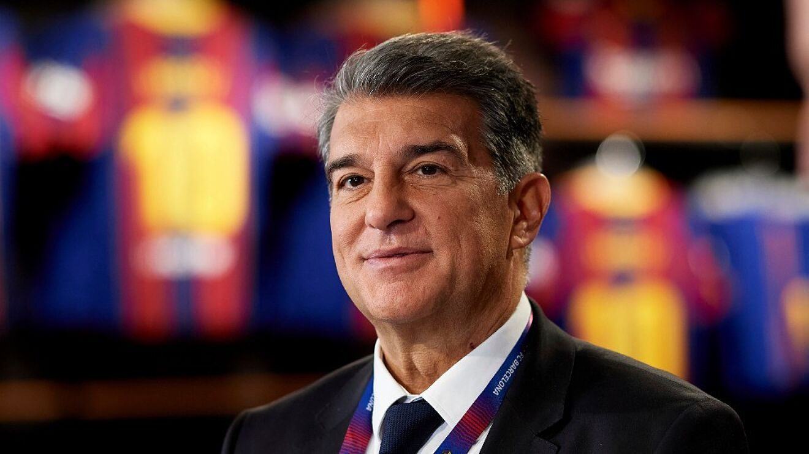

Joan Laporta
Presidente
Laporta es licenciado en Derecho por la Universidad de Barcelona. Máster en Derecho de Sociedades y Expertos en Tributario en el Instituto de Estudios Superiores Abat Oliba de Barcelona


Laporta es licenciado en Derecho por la Universidad de Barcelona. Máster en Derecho de Sociedades y Expertos en Tributario en el Instituto de Estudios Superiores Abat Oliba de Barcelona
Yuste es socio fundador de AQIPA Iberia, empresa filial de AQIPA GMBH Austria, con filiales en 13 países. También es consultor especializado en comercio internacional.
Fort es licenciada en Derecho por la Universidad de Barcelona. Abogada especializada en derecho público y urbanismo, es socia y fundadora de BRF Abogados SLP.
Romeu es licenciado en Ciencias Económicas y trabajó en el Banco de Santander y en Bankia. En 2015 se incorporó al grupo Audax Energía como director corporativo

Escudero es directivo y uno de los administradores del Grupo Escudero, propietario del semanario Hora Nova de Figueres, presidente de la Federación de Hostelería de las comarcas de Girona.
Licenciado en Derecho en la Universidad de Columbia (EE.UU.). Presidente y administrador del Grupo Clipper's
Olivé es licenciado en Medicina y Cirugía por la Universidad Autónoma de Barcelona. Presidente de Hestia Alliance SL.
Cubells es licenciado en Derecho por la Universidad de Barcelona. Abogado con más de 25 años de experiencia profesional, es socio fundador del despacho Iuris Grup Advocats